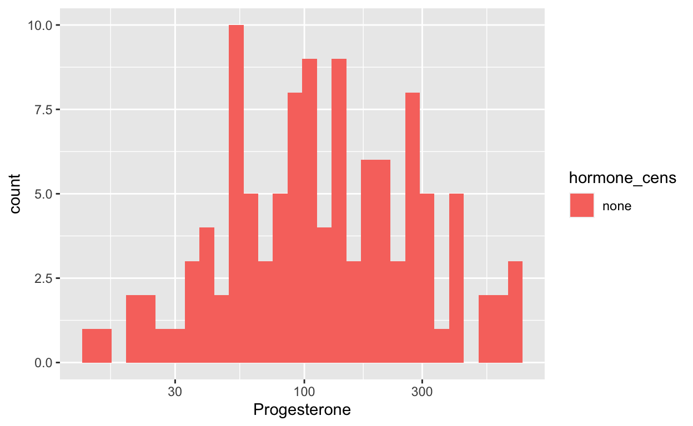
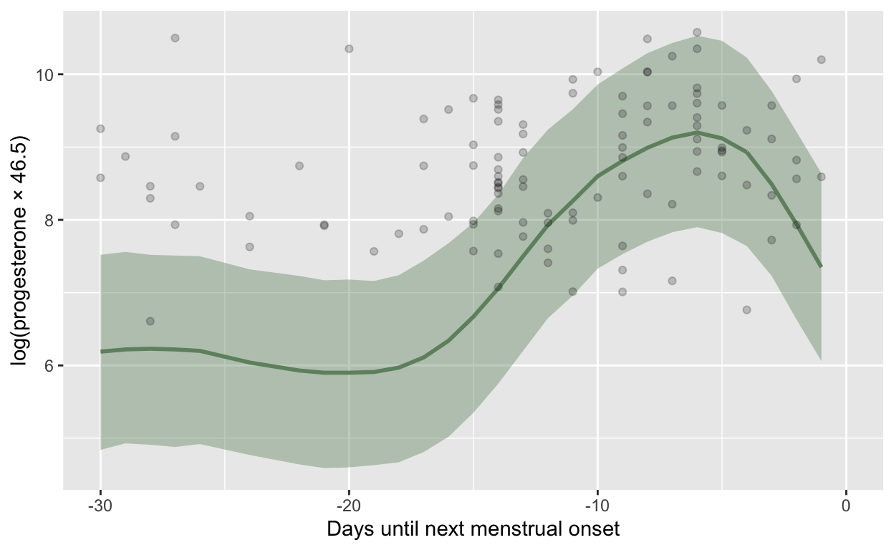
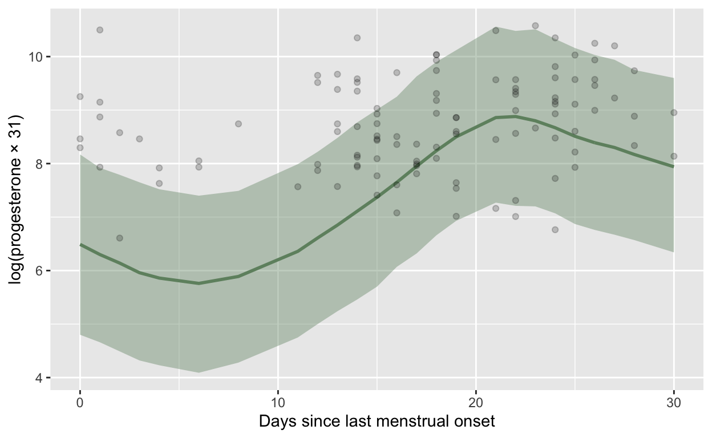
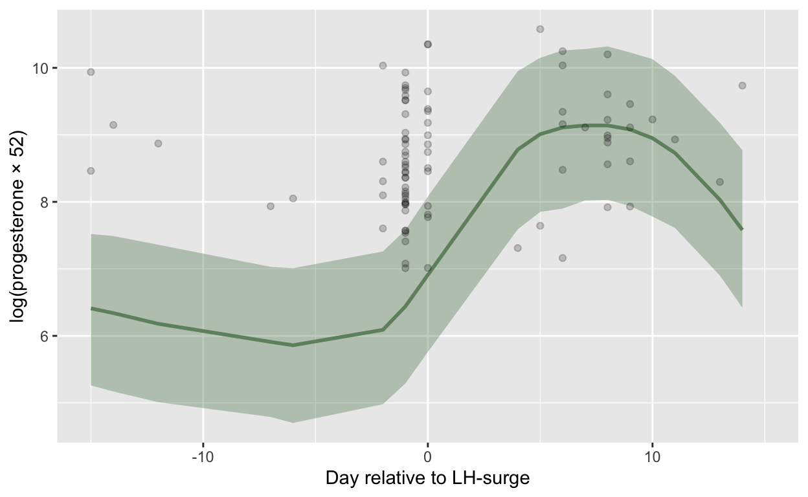
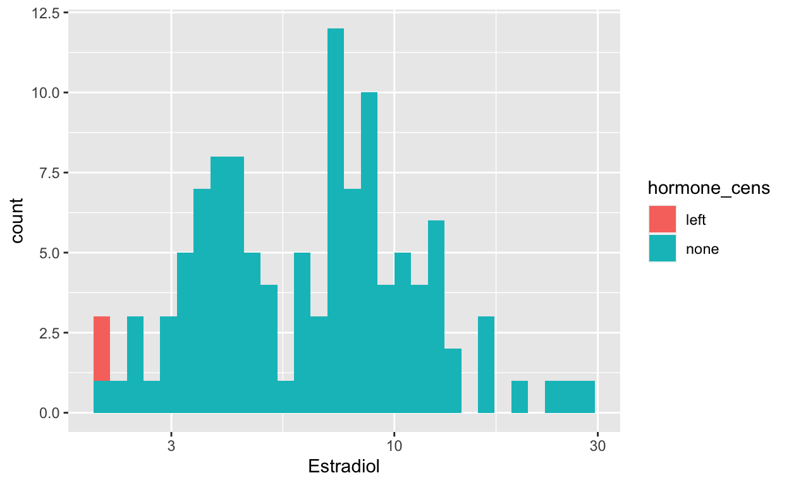
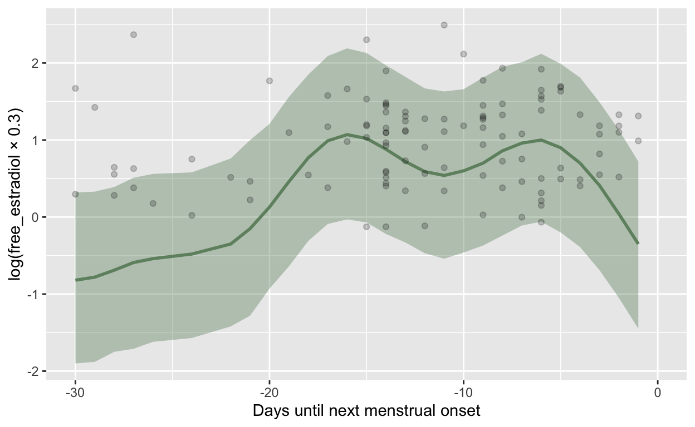
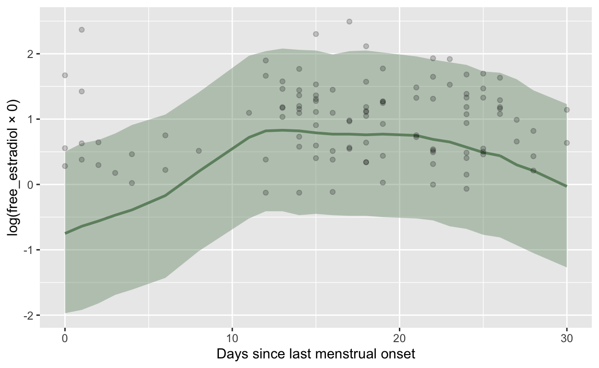
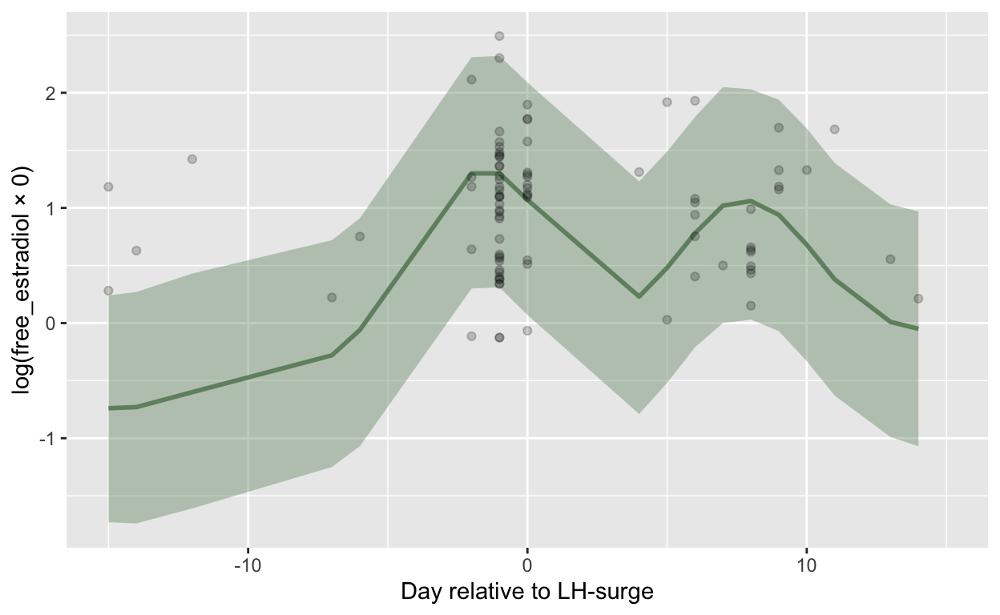
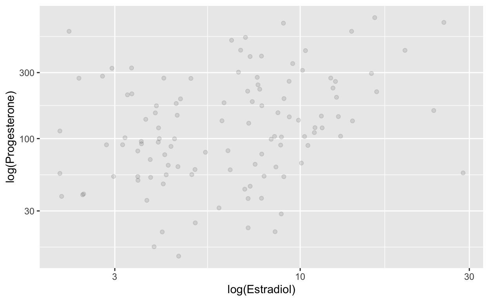

Blake, K. R., Bastian, B., O’Dean, S. M., & Denson, T. F. (2017). High estradiol and low progesterone are associated with high assertiveness in women. Psychoneuroendocrinology, 75, 91–99. http://www.sciencedirect.com/science/article/pii/S0306453016302190
Ninety-eight women (Mage=22.19years,SD=4.43;Wave1n=60;Wave2n=38)
Using a within-subject design, we estimated ovulation for 98 women using urinary luteinizing hormone (LH) tests. We then assessed measures of assertiveness and sexual availability at fertile and non-fertile time points. For a subgroup of the sample for which hormone measures were available (n = 60), we further examined whether estradiol and progesterone at each time point were associated with assertiveness and sexual availability.
To maximize the likelihood of detecting surges in LH, we fol- lowed the standardized LH testing procedure in Blake et al. (2016b). All participants used commercially available urinary LH tests (Blue Cross Bio-Medical Co. LTD, CE/FDA Registered) and tested until a positive surge was detected. Wave 1 participants tested until a positive result was reported (a maximum of 10days) and Wave 2 tested for 11 continuous days, even if a surge was reported ear- lier. We instructed participants to test between 1000 h and 2000 h and report the result to the research team via SMS or email. The repeated design of the study required that all participants attended one fertile and one non-fertile laboratory session. Hence, all participants included here detected a LH surge and thus had ovulatory cycles. Participants who did not record a surge in LH were not eligible for inclusion in the study (see Blake et al., 2016b for full details of the sampling procedure).
Progesterone and estradiol samples were stored at −20◦C and analyzed by a professional reference laboratory in Dresden, Germany. After thawing, samples were centrifuged at 3000 rpm for five minutes, which resulted in a clear supernatant of low viscosity. Salivary progesterone and estradiol concentrations were measured using commercially available chemiluminescence-immuno-assays with high sensitivity (IBL International, Hamburg, Germany). Intra- and inter-assay coefficients of variations for both hormones were below 12%.
Import
blake <- rio::import("https://osf.io/wsmxr/download", format = "sav")
blake_long <- rio::import("https://osf.io/2d7xp/download", format = "sav") %>% left_join(rio::import("data/blake/Saliva long - for Ruben.sav"), by = c("SUBJECT" = "Subject", "Fertility" = "fertility"))
left_join: added 7 columns (Phase, Estra, Prog, notes, Exclude, …) > rows only in x 0 > rows only in y ( 0) > matched rows 120 > ===== > rows total 120n_distinct(blake$Subject)
[1] 96n_distinct(blake_long$SUBJECT)
[1] 60[1] 60pss2date <- function(x) as.Date(x/86400, origin = "1582-10-14")
blake <- blake %>%
mutate(date_fertile_session = pss2date(Date_F),
date_nonfertile_session = pss2date(Date_NF),
date_first = if_else(date_fertile_session < date_nonfertile_session,
date_fertile_session, date_nonfertile_session))
mutate: new variable 'date_fertile_session' (Date) with 48 unique values and 38% NA new variable 'date_nonfertile_session' (Date) with 47 unique values and 38% NA new variable 'date_first' (Date) with 45 unique values and 38% NAqplot(blake$date_nonfertile_session, blake$date_fertile_session) + geom_abline()
Warning: Removed 36 rows containing missing values (geom_point).blake_long <- blake_long %>% left_join(blake %>% mutate(partner = if_else(RelStat == "single", 0, 1)) %>% select(SUBJECT = Subject, LengthRep, date_fertile_session, date_nonfertile_session, date_first, age = Age, partner))
mutate: new variable 'partner' (double) with 2 unique values and 0% NAselect: renamed 2 variables (SUBJECT, age) and dropped 63 variablesJoining, by = "SUBJECT"left_join: added 6 columns (LengthRep, date_fertile_session, date_nonfertile_session, date_first, age, …) > rows only in x 0 > rows only in y ( 36) > matched rows 120 > ===== > rows total 120blake_long <- blake_long %>%
mutate(date = if_else(Fertility == 1, date_fertile_session, date_nonfertile_session),
day_rel_to_start = as.numeric(date - date_first),
bc_day = Day - LengthRep - 1,
bc_day = if_else(bc_day < 0, bc_day, NA_real_)) %>%
group_by(SUBJECT) %>%
mutate(date_lh_peak = na.omit(date + DaysAfterPeak),
lh_day = as.numeric(date - date_lh_peak),
cycle_no = if_else(rep(lh_day[1] < lh_day[2] &
Day[1] < Day[2], 2), 1, Session + 1))
mutate: new variable 'date' (Date) with 74 unique values and 0% NA new variable 'day_rel_to_start' (double) with 30 unique values and 0% NA new variable 'bc_day' (double) with 29 unique values and 3% NAgroup_by: one grouping variable (SUBJECT)mutate (grouped): new variable 'date_lh_peak' (Date) with 45 unique values and 0% NA new variable 'lh_day' (double) with 36 unique values and 0% NA new variable 'cycle_no' (double) with 2 unique values and 0% NAqplot(Day, data = blake_long) + facet_wrap(~ Fertility)
`stat_bin()` using `bins = 30`. Pick better value with `binwidth`.qplot(lh_day, data = blake_long,binwidth = 1) + facet_wrap(~ Fertility)
FALSE
120 # blake_long %>% select(SUBJECT, Session, Fertility, cycle_no, date, day_rel_to_start, date_lh_peak, lh_day, bc_day, Day, DaysAfterPeak, Estra, Progw) %>% arrange(SUBJECT, Session) %>% filter(SUBJECT <= 10) %>% View
# columns with mean are the person average or sth similar. Estra and Progw are winsorized, I now have Estra and Prog as raw values
# mean(blake_long$Zmean_estraLG,na.rm=T)
# mean(blake_long$ZEstrawLG,na.rm=T)
# mean(exp(blake_long$mean_estraLG),na.rm=T)
# mean(blake_long$Estraw,na.rm=T)
# mean(blake_long$meanE,na.rm=T)
# cor.test(blake_long$Estraw,blake_long$meanE)
# cor.test(blake_long$Estraw,exp(blake_long$EstrawLG))
# cor.test(exp(blake_long$mean_estraLG),blake_long$meanE)
# cor.test(exp(blake_long$mean_estraLG),blake_long$meanE)
# blake_long %>% select(contains("stra"), meanE) %>% cor(use='p')
qplot(blake_long$Estra)
`stat_bin()` using `bins = 30`. Pick better value with `binwidth`.Warning: Removed 6 rows containing non-finite values (stat_bin).
qplot(blake_long$Prog)
`stat_bin()` using `bins = 30`. Pick better value with `binwidth`.Warning: Removed 6 rows containing non-finite values (stat_bin).blake_long %>% ungroup() %>%
filter(Fertility == 0, Day <= 15) %>%
summarise(mean(Day), sd(Day), n(), pct = n()/60)
ungroup: no grouping variablesfilter: removed 105 rows (88%), 15 rows remainingsummarise: now one row and 4 columns, ungrouped# A tibble: 1 × 4
`mean(Day)` `sd(Day)` `n()` pct
<dbl> <dbl> <int> <dbl>
1 3.6 2.50 15 0.25blake_long %>% ungroup() %>%
filter(Fertility == 0, Day > 15) %>%
summarise(mean(Day), sd(Day), n(), pct = n()/60)
ungroup: no grouping variablesfilter: removed 75 rows (62%), 45 rows remainingsummarise: now one row and 4 columns, ungrouped# A tibble: 1 × 4
`mean(Day)` `sd(Day)` `n()` pct
<dbl> <dbl> <int> <dbl>
1 25.7 3.22 45 0.75# Forty-seven percent of non-fertile sessions occurred in the early follicular phase (mean cycle day = 4.02, SD = 2.54) and the remain- der occurred in the late luteal phase (mean cycle day=26.06, SD=3.45).
# Most participants completed both fertile and non- fertile sessions in the same menstrual cycle (63.5%), the remainder attended sessions occurring 1, 2, or 3 cycles apart.
1-table(blake_long$cycle_no)[2]/60
2
0.1833333 # Once a positive LH surge was detected, 85.4% of participants attended their fertile session within one day, the remaining 14.6% attended this session within two days.
prop.table(table(blake_long$DaysAfterPeak <= 1))
FALSE TRUE
0.08333333 0.91666667 ggplot(blake_long, aes(Day, lh_day)) + geom_smooth(method = 'lm') + geom_point() + ylim(-15, 15)
`geom_smooth()` using formula 'y ~ x'Warning: Removed 25 rows containing non-finite values (stat_smooth).Warning: Removed 25 rows containing missing values (geom_point).ggplot(blake_long, aes(bc_day, lh_day)) + geom_smooth(method = 'lm') + geom_point() + ylim(-15, 15)
`geom_smooth()` using formula 'y ~ x'Warning: Removed 28 rows containing non-finite values (stat_smooth).Warning: Removed 28 rows containing missing values (geom_point).ggplot(blake_long, aes(Day, log(Estra))) + geom_smooth() + geom_point()
`geom_smooth()` using method = 'loess' and formula 'y ~ x'Warning: Removed 6 rows containing non-finite values (stat_smooth).Warning: Removed 6 rows containing missing values (geom_point).
ggplot(blake_long, aes(Day, log(Prog))) + geom_smooth() + geom_point()
`geom_smooth()` using method = 'loess' and formula 'y ~ x'Warning: Removed 6 rows containing non-finite values (stat_smooth).
Warning: Removed 6 rows containing missing values (geom_point).ggplot(blake_long, aes(Day, log(Estra/Prog))) + geom_smooth() + geom_point()
`geom_smooth()` using method = 'loess' and formula 'y ~ x'Warning: Removed 6 rows containing non-finite values (stat_smooth).
Warning: Removed 6 rows containing missing values (geom_point).
ggplot(blake_long, aes(bc_day, log(Estra))) + geom_smooth() + geom_point()
`geom_smooth()` using method = 'loess' and formula 'y ~ x'Warning: Removed 10 rows containing non-finite values (stat_smooth).Warning: Removed 10 rows containing missing values (geom_point).ggplot(blake_long, aes(bc_day, log(Prog))) + geom_smooth() + geom_point()
`geom_smooth()` using method = 'loess' and formula 'y ~ x'Warning: Removed 10 rows containing non-finite values (stat_smooth).
Warning: Removed 10 rows containing missing values (geom_point).ggplot(blake_long, aes(bc_day, log(Estra/Prog))) + geom_smooth() + geom_point()
`geom_smooth()` using method = 'loess' and formula 'y ~ x'Warning: Removed 10 rows containing non-finite values (stat_smooth).
Warning: Removed 10 rows containing missing values (geom_point).`geom_smooth()` using method = 'loess' and formula 'y ~ x'Warning: Removed 31 rows containing non-finite values (stat_smooth).Warning: Removed 31 rows containing missing values (geom_point).`geom_smooth()` using method = 'loess' and formula 'y ~ x'Warning: Removed 31 rows containing non-finite values (stat_smooth).
Warning: Removed 31 rows containing missing values (geom_point).`geom_smooth()` using method = 'loess' and formula 'y ~ x'Warning: Removed 31 rows containing non-finite values (stat_smooth).
Warning: Removed 31 rows containing missing values (geom_point).# codebook::label_browser_static(blake)
# codebook::label_browser_static(blake_long)
# blake_long %>% select(SUBJECT, Fertility, FertilityNF, DOPno2, Day, DaysAfterPeak, Session, Estra, Progw) %>% arrange(SUBJECT, Session) %>% filter(SUBJECT < 10)
# blake_long %>% select(SUBJECT, Fertility, FertilityNF, DOPno2, Day, DaysAfterPeak, Session, Estra, Progw) %>% arrange(SUBJECT, Session) %>% filter(SUBJECT == 10)
table(blake_long$bc_day >= -1)
FALSE TRUE
113 3 blake_long <- blake_long %>%
select(id = SUBJECT, cycle = cycle_no, bc_day, fc_day = Day, lh_day, estradiol = Estra, progesterone = Prog, cycle_length = LengthRep, age, partner) %>%
mutate(
fc_day = fc_day - 1) %>% as_tibble()
select: renamed 6 variables (id, cycle, fc_day, estradiol, progesterone, …) and dropped 123 variablesmutate (grouped): changed 120 values (100%) of 'fc_day' (0 new NA)range(blake_long$fc_day, na.rm = T)
[1] 0 33range(blake_long$bc_day, na.rm = T)
[1] -30 -1range(blake_long$lh_day, na.rm = T)
[1] -104 20blake_long <- blake_long %>%
mutate(estradiol_cens = if_else(estradiol <= 2.1, "left", "none"),
estradiol = if_else(estradiol_cens == "left", 2.1, estradiol)
) %>%
mutate(
progesterone_cens = if_else(progesterone <= 8.9, "left", "none"),
progesterone = if_else(progesterone_cens == "left", 8.9, progesterone)
)
mutate: changed 2 values (2%) of 'estradiol' (0 new NA) new variable 'estradiol_cens' (character) with 3 unique values and 5% NAmutate: changed 0 values (0%) of 'progesterone' (0 new NA) new variable 'progesterone_cens' (character) with 2 unique values and 5% NA is.na(progesterone)
is.na(estradiol) FALSE TRUE
FALSE 114 0
TRUE 0 6saveRDS(blake_long, "blake2017.rds")
Export
source("0_summary_functions.R")
Loading required package: RcppLoading 'brms' package (version 2.16.2). Useful instructions
can be found by typing help('brms'). A more detailed introduction
to the package is available through vignette('brms_overview').
Attaching package: 'brms'The following object is masked from 'package:stats':
arexport_anon("blake2017", blake_long)
select: dropped 2 variables (age, partner)ungroup: no grouping variablesmutate: converted 'id' from double to factor (0 new NA)Summarize
blake <- blake_long
df <- blake %>% select(id, cycle, bc_day, fc_day, lh_day, hormone = progesterone, hormone_cens = progesterone_cens, cycle_length, age, partner)
select: renamed 2 variables (hormone, hormone_cens) and dropped 2 variablessummarise_hormone(df = df, Dataset = "Blake 2017", Hormone = "Progesterone", Method = "Salivary immunoassay (IBL)",
Citation = "Blake, K. R., Bastian, B., O’Dean, S. M., & Denson, T. F. (2017). High estradiol and low progesterone are associated with high assertiveness in women. Psychoneuroendocrinology, 75, 91–99. http://www.sciencedirect.com/science/article/pii/S0306453016302190",
LOD = 8.9,
CV_intra = "<12",
CV_inter = "<12",
Procedure = "Progesterone and estradiol samples were stored at −20◦C and analyzed by a professional reference laboratory in Dresden, Germany. After thawing, samples were centrifuged at 3000 rpm for five minutes, which resulted in a clear supernatant of low viscosity. Salivary progesterone and estradiol concentrations were measured using commercially available chemiluminescence-immuno-assays with high sensitivity (IBL International, Hamburg, Germany). Intra- and inter-assay coefficients of variations for both hormones were below 12%. ",
Scheduling = "Fertile and non-fertile phase. 'The repeated design of the study required that all participants attended one fertile and one non-fertile laboratory session. Hence, all participants included here detected a LH surge and thus had ovulatory cycles. Forty-seven percent of non-fertile sessions occurred in the early follicular phase (mean cycle day = 4.02, SD = 2.54) and the remain- der occurred in the late luteal phase (mean cycle day=26.06, SD=3.45). Most participants completed both fertile and non- fertile sessions in the same menstrual cycle (63.5%), the remainder attended sessions occurring 1, 2, or 3 cycles apart. Once a positive LH surge was detected, 85.4% of participants attended their fertile session within one day, the remaining 14.6% attended this session within two days. Following a surge in LH, ovulation is expected to occur approximately 24–48 h later (Direito et al., 2013).2'",
LH_test = "To maximize the likelihood of detecting surges in LH, we fol- lowed the standardized LH testing procedure in Blake et al. (2016b). All participants used commercially available urinary LH tests (Blue Cross Bio-Medical Co. LTD, CE/FDA Registered) and tested until a positive surge was detected. Wave 1 participants tested until a positive result was reported (a maximum of 10days) and Wave 2 tested for 11 continuous days, even if a surge was reported ear- lier. We instructed participants to test between 1000 h and 2000 h and report the result to the research team via SMS or email. The repeated design of the study required that all participants attended one fertile and one non-fertile laboratory session. Hence, all participants included here detected a LH surge and thus had ovulatory cycles. Participants who did not record a surge in LH were not eligible for inclusion in the study (see Blake et al., 2016b for full details of the sampling procedure).")
select: dropped 8 variables (bc_day, fc_day, lh_day, hormone, hormone_cens, …)group_by: 2 grouping variables (id, cycle)summarise: now 109 rows and 3 columns, one group variable remaining (id)ungroup: no grouping variablesselect: dropped 9 variables (cycle, bc_day, fc_day, lh_day, hormone, …)group_by: one grouping variable (id)summarise: now 60 rows and 2 columns, ungroupedselect: dropped 8 variables (cycle, bc_day, fc_day, lh_day, hormone, …)group_by: one grouping variable (id)summarise: now 60 rows and 2 columns, ungroupedfilter: removed 6 rows (5%), 114 rows remaininggroup_by: 2 grouping variables (id, cycle)mutate (grouped): new variable 'hormone_diff' (double) with 23 unique values and 0% NA new variable 'log_hormone_diff' (double) with 23 unique values and 0% NAungroup: no grouping variablesJoining, by = "bc_day"left_join: added 26 columns (prc_stirn_bc, prc_wcx_bc, est_estradiol_bc, est_estradiol_bc_se, est_estradiol_bc_low, …) > rows only in x 4 > rows only in y ( 12) > matched rows 110 > ===== > rows total 114left_join: added 26 columns (prc_stirn_fc, prc_wcx_fc, est_estradiol_fc, est_estradiol_fc_se, est_estradiol_fc_low, …) > rows only in x 0 > rows only in y ( 13) > matched rows 114 > ===== > rows total 114group_by: one grouping variable (id)filter (grouped): no rows removedsummarise: now 58 rows and 2 columns, ungroupedsummarise: now one row and 3 columns, ungroupedgroup_by: 2 grouping variables (id, cycle)filter (grouped): no rows removedsummarise: now 103 rows and 3 columns, one group variable remaining (id)ungroup: no grouping variablessummarise: now one row and 3 columns, ungroupedleft_join: added 22 columns (conception_risk_lh, fertile_lh, est_estradiol_lh, est_estradiol_lh_se, est_estradiol_lh_low, …) > rows only in x 25 > rows only in y ( 13) > matched rows 89 > ===== > rows total 114group_by: one grouping variable (id)filter (grouped): removed 24 rows (21%), 90 rows remaininggroup_by: one grouping variable (id)filter (grouped): removed 2 rows (2%), 112 rows remainingWarning: Results may not be meaningful for censored models.
Warning: Results may not be meaningful for censored models.Warning: Rows containing NAs were excluded from the model.filter: removed 25 rows (22%), 89 rows remainingWarning: Results may not be meaningful for censored models.Warning in sqrt(r2[, "Estimate"]): NaNs producedWarning in sqrt(r2[, "Q2.5"]): NaNs producedWarning: Results may not be meaningful for censored models.Warning in sqrt(r2[, "Estimate"]): NaNs producedWarning in sqrt(r2[, "Q2.5"]): NaNs producedWarning: Results may not be meaningful for censored models.Warning in sqrt(r2[, "Estimate"]): NaNs producedWarning in sqrt(r2[, "Q2.5"]): NaNs producedWarning in sqrt(r2[, "Q97.5"]): NaNs produced$Dataset
[1] "Blake 2017"
$Citation
[1] "Blake, K. R., Bastian, B., O’Dean, S. M., & Denson, T. F. (2017). High estradiol and low progesterone are associated with high assertiveness in women. Psychoneuroendocrinology, 75, 91–99. http://www.sciencedirect.com/science/article/pii/S0306453016302190"
$Hormone
[1] "Progesterone"
$Method
[1] "Salivary immunoassay (IBL)"
$`Limit of detection`
[1] 8.9
$LOQ
[1] NA
$`Intraassay CV`
[1] "<12"
$`Interassay CV`
[1] "<12"
$Procedure
[1] "Progesterone and estradiol samples were stored at −20◦C and analyzed by a professional reference laboratory in Dresden, Germany. After thawing, samples were centrifuged at 3000 rpm for five minutes, which resulted in a clear supernatant of low viscosity. Salivary progesterone and estradiol concentrations were measured using commercially available chemiluminescence-immuno-assays with high sensitivity (IBL International, Hamburg, Germany). Intra- and inter-assay coefficients of variations for both hormones were below 12%. "
$Scheduling
[1] "Fertile and non-fertile phase. 'The repeated design of the study required that all participants attended one fertile and one non-fertile laboratory session. Hence, all participants included here detected a LH surge and thus had ovulatory cycles. Forty-seven percent of non-fertile sessions occurred in the early follicular phase (mean cycle day = 4.02, SD = 2.54) and the remain- der occurred in the late luteal phase (mean cycle day=26.06, SD=3.45). Most participants completed both fertile and non- fertile sessions in the same menstrual cycle (63.5%), the remainder attended sessions occurring 1, 2, or 3 cycles apart. Once a positive LH surge was detected, 85.4% of participants attended their fertile session within one day, the remaining 14.6% attended this session within two days. Following a surge in LH, ovulation is expected to occur approximately 24–48 h later (Direito et al., 2013).2'"
$LH_test
[1] "To maximize the likelihood of detecting surges in LH, we fol- lowed the standardized LH testing procedure in Blake et al. (2016b). All participants used commercially available urinary LH tests (Blue Cross Bio-Medical Co. LTD, CE/FDA Registered) and tested until a positive surge was detected. Wave 1 participants tested until a positive result was reported (a maximum of 10days) and Wave 2 tested for 11 continuous days, even if a surge was reported ear- lier. We instructed participants to test between 1000 h and 2000 h and report the result to the research team via SMS or email. The repeated design of the study required that all participants attended one fertile and one non-fertile laboratory session. Hence, all participants included here detected a LH surge and thus had ovulatory cycles. Participants who did not record a surge in LH were not eligible for inclusion in the study (see Blake et al., 2016b for full details of the sampling procedure)."
$distribution`stat_bin()` using `bins = 30`. Pick better value with `binwidth`.Warning: Removed 6 rows containing non-finite values (stat_bin).
$mean
[1] 170.2247
$logmean
[1] 4.766584
$logsd
[1] 0.8838074
$median
[1] 112.001
$sd
[1] 155.6896
$mad
[1] 91.10651
$range
[1] "14.13, 748.71"
$missing
[1] 6
$outliers
[1] 0
$censored
[1] 0
$n_women
[1] 60
$n_cycles
[1] 109
$n_days
[1] 120
$age
[1] "22.7±4.87"
$in_relationship
[1] "53%"
$cycle_length
[1] "29.2±2.50"
$usable_n
[1] 114
$usable_n_women
[1] 58
$no_lh_surge_woman
[1] "0/58 (0%)"
$no_lh_surge_cycle
[1] "0/103 (0%)"
$var_id_loo
[1] "-0.00 [-0.06;0.04]"
$var_cycle_loo
[1] "-0.01 [-0.07;0.03]"
$var_id
[1] "0.26 [0.02;0.55] (10%)"
$var_cycle
[1] "0.25 [0.01;0.60] (11%)"
$var_resid
[1] "0.80 [0.64;0.96] (79%)"
$bc_day_modelWarning: There were 1 divergent transitions after warmup.
Increasing adapt_delta above may help. See http://mc-stan.org/misc/
warnings.html#divergent-transitions-after-warmup
Family: gaussian
Links: mu = identity; sigma = identity
Formula: log(hormone) | cens(hormone_cens) ~ s(bc_day) + (1 | id) + (1 | id:cycle)
Data: df (Number of observations: 110)
Draws: 4 chains, each with iter = 1000; warmup = 0; thin = 1;
total post-warmup draws = 4000
Smooth Terms:
Estimate Est.Error l-95% CI u-95% CI Rhat Bulk_ESS
sds(sbc_day_1) 1.13 1.01 0.05 3.82 1.00 1262
Tail_ESS
sds(sbc_day_1) 1787
Group-Level Effects:
~id (Number of levels: 58)
Estimate Est.Error l-95% CI u-95% CI Rhat Bulk_ESS
sd(Intercept) 0.24 0.14 0.02 0.53 1.00 734
Tail_ESS
sd(Intercept) 1467
~id:cycle (Number of levels: 99)
Estimate Est.Error l-95% CI u-95% CI Rhat Bulk_ESS
sd(Intercept) 0.22 0.15 0.01 0.58 1.00 707
Tail_ESS
sd(Intercept) 874
Population-Level Effects:
Estimate Est.Error l-95% CI u-95% CI Rhat Bulk_ESS Tail_ESS
Intercept 4.77 0.09 4.59 4.95 1.00 4568 2899
sbc_day_1 -0.12 2.68 -6.72 4.43 1.00 1588 1474
Family Specific Parameters:
Estimate Est.Error l-95% CI u-95% CI Rhat Bulk_ESS Tail_ESS
sigma 0.81 0.08 0.65 0.97 1.00 943 1003
Draws were sampled using sample(hmc). For each parameter, Bulk_ESS
and Tail_ESS are effective sample size measures, and Rhat is the potential
scale reduction factor on split chains (at convergence, Rhat = 1).
$r_bc
[1] "0.26 [0.08;0.41]"
$rmse_bc
[1] "1.19 [1.03;1.39]"
$r_loo_bc
[1] "NaN [NaN;0.23]"
$r_bc_stirn
[1] "-0.21 [-0.38;-0.02]"
$r_log_bc_stirn
[1] "-0.17 [-0.35; 0.01]"
$r_diff_bc_stirn
[1] "-0.05 [-0.24; 0.14]"
$r_log_diff_bc_stirn
[1] "-0.08 [-0.26; 0.11]"
$r_bc_imputed
[1] " 0.25 [ 0.07; 0.42]"
$r_diff_bc_imputed
[1] "-0.16 [-0.34; 0.03]"
$sd_bc_imputed
[1] "1.15 (83%)"
$r_diff_bc_imputed_rr
[1] "-0.18 [-0.37; 0.03]"
$imputed_bc_vs_measured_graphWarning: Removed 4 rows containing missing values (geom_smooth).Warning: Removed 4 rows containing missing values (geom_point).
$rmse_bc_imputed
[1] " 1.53"
$fc_day_modelWarning: There were 1 divergent transitions after warmup.
Increasing adapt_delta above may help. See http://mc-stan.org/misc/
warnings.html#divergent-transitions-after-warmup
Family: gaussian
Links: mu = identity; sigma = identity
Formula: log(hormone) | cens(hormone_cens) ~ s(fc_day) + (1 | id) + (1 | id:cycle)
Data: df (Number of observations: 114)
Draws: 4 chains, each with iter = 1000; warmup = 0; thin = 1;
total post-warmup draws = 4000
Smooth Terms:
Estimate Est.Error l-95% CI u-95% CI Rhat Bulk_ESS
sds(sfc_day_1) 0.94 0.89 0.03 3.33 1.00 1145
Tail_ESS
sds(sfc_day_1) 1907
Group-Level Effects:
~id (Number of levels: 58)
Estimate Est.Error l-95% CI u-95% CI Rhat Bulk_ESS
sd(Intercept) 0.25 0.15 0.01 0.53 1.00 724
Tail_ESS
sd(Intercept) 1572
~id:cycle (Number of levels: 103)
Estimate Est.Error l-95% CI u-95% CI Rhat Bulk_ESS
sd(Intercept) 0.21 0.15 0.01 0.54 1.00 680
Tail_ESS
sd(Intercept) 1097
Population-Level Effects:
Estimate Est.Error l-95% CI u-95% CI Rhat Bulk_ESS Tail_ESS
Intercept 4.77 0.09 4.60 4.95 1.00 4568 2952
sfc_day_1 -0.46 2.64 -7.30 3.25 1.00 1796 1570
Family Specific Parameters:
Estimate Est.Error l-95% CI u-95% CI Rhat Bulk_ESS Tail_ESS
sigma 0.80 0.08 0.64 0.95 1.00 1043 1109
Draws were sampled using sample(hmc). For each parameter, Bulk_ESS
and Tail_ESS are effective sample size measures, and Rhat is the potential
scale reduction factor on split chains (at convergence, Rhat = 1).
$r_fc
[1] "0.25 [0.07;0.39]"
$rmse_fc
[1] "1.18 [1.02;1.36]"
$r_loo_fc
[1] "NaN [NaN;0.24]"
$r_fc_stirn
[1] "-0.13 [-0.31; 0.05]"
$r_log_fc_stirn
[1] "-0.11 [-0.29; 0.07]"
$r_diff_fc_stirn
[1] "-0.02 [-0.20; 0.16]"
$r_log_diff_fc_stirn
[1] " 0.00 [-0.18; 0.19]"
$r_fc_imputed
[1] " 0.20 [ 0.02; 0.37]"
$r_diff_fc_imputed
[1] "-0.19 [-0.36;-0.01]"
$sd_fc_imputed
[1] "0.92 (61%)"
$r_diff_fc_imputed_rr
[1] "-0.24 [-0.44;-0.01]"
$imputed_fc_vs_measured_graphWarning: Removed 3 rows containing missing values (geom_smooth).Warning: Removed 3 rows containing missing values (geom_point).
$rmse_fc_imputed
[1] " 1.22"
$lh_day_modelWarning: There were 46 divergent transitions after warmup.
Increasing adapt_delta above may help. See http://mc-stan.org/misc/
warnings.html#divergent-transitions-after-warmup
Family: gaussian
Links: mu = identity; sigma = identity
Formula: log(hormone) | cens(hormone_cens) ~ s(lh_day) + (1 | id) + (1 | id:cycle)
Data: df %>% filter(between(lh_day, -15, 15)) (Number of observations: 89)
Draws: 4 chains, each with iter = 1000; warmup = 0; thin = 1;
total post-warmup draws = 4000
Smooth Terms:
Estimate Est.Error l-95% CI u-95% CI Rhat Bulk_ESS
sds(slh_day_1) 0.93 0.65 0.14 2.54 1.00 1664
Tail_ESS
sds(slh_day_1) 1618
Group-Level Effects:
~id (Number of levels: 58)
Estimate Est.Error l-95% CI u-95% CI Rhat Bulk_ESS
sd(Intercept) 0.24 0.15 0.01 0.55 1.01 419
Tail_ESS
sd(Intercept) 1195
~id:cycle (Number of levels: 84)
Estimate Est.Error l-95% CI u-95% CI Rhat Bulk_ESS
sd(Intercept) 0.72 0.16 0.25 0.93 1.02 121
Tail_ESS
sd(Intercept) 88
Population-Level Effects:
Estimate Est.Error l-95% CI u-95% CI Rhat Bulk_ESS Tail_ESS
Intercept 4.76 0.10 4.57 4.95 1.00 2086 2289
slh_day_1 -0.79 1.98 -5.33 2.75 1.00 2202 1895
Family Specific Parameters:
Estimate Est.Error l-95% CI u-95% CI Rhat Bulk_ESS Tail_ESS
sigma 0.33 0.17 0.13 0.76 1.02 88 97
Draws were sampled using sample(hmc). For each parameter, Bulk_ESS
and Tail_ESS are effective sample size measures, and Rhat is the potential
scale reduction factor on split chains (at convergence, Rhat = 1).
$r_lh
[1] "0.24 [0.07;0.38]"
$rmse_lh
[1] "0.91 [0.82;1.15]"
$r_loo_lh
[1] "NaN [NaN;NaN]"
$r_prob_lh
[1] "-0.18 [-0.37; 0.03]"
$r_log_prob_lh
[1] "-0.19 [-0.38; 0.02]"
$r_diff_prob_lh
[1] "-0.09 [-0.29; 0.12]"
$r_log_diff_prob_lh
[1] "-0.15 [-0.35; 0.06]"
$r_lh_imputed
[1] " 0.21 [ 0.00; 0.40]"
$r_diff_lh_imputed
[1] " 0.06 [-0.15; 0.26]"
$sd_lh_imputed
[1] "1.17 (77%)"
$r_diff_lh_imputed_rr
[1] " 0.07 [-0.17; 0.30]"
$imputed_lh_vs_measured_graphWarning: Removed 25 rows containing missing values (geom_smooth).Warning: Removed 25 rows containing missing values (geom_point).
$rmse_lh_imputed
[1] " 1.96"df <- blake %>% select(id, cycle, bc_day, fc_day, lh_day, hormone = estradiol, hormone_cens = estradiol_cens, cycle_length, age, partner)
select: renamed 2 variables (hormone, hormone_cens) and dropped 2 variablessummarise_hormone(df = df, Dataset = "Blake 2017", Hormone = "Estradiol", Method = "Salivary immunoassay (IBL)",
Citation = "Blake, K. R., Bastian, B., O’Dean, S. M., & Denson, T. F. (2017). High estradiol and low progesterone are associated with high assertiveness in women. Psychoneuroendocrinology, 75, 91–99. http://www.sciencedirect.com/science/article/pii/S0306453016302190",
LOD = 2.1,
CV_intra = "<12",
CV_inter = "<12",
Procedure = "Progesterone and estradiol samples were stored at −20◦C and analyzed by a professional reference laboratory in Dresden, Germany. After thawing, samples were centrifuged at 3000 rpm for five minutes, which resulted in a clear supernatant of low viscosity. Salivary progesterone and estradiol concentrations were measured using commercially available chemiluminescence-immuno-assays with high sensitivity (IBL International, Hamburg, Germany). Intra- and inter-assay coefficients of variations for both hormones were below 12%. ",
Scheduling = "Fertile and non-fertile phase. 'The repeated design of the study required that all participants attended one fertile and one non-fertile laboratory session. Hence, all participants included here detected a LH surge and thus had ovulatory cycles. Forty-seven percent of non-fertile sessions occurred in the early follicular phase (mean cycle day = 4.02, SD = 2.54) and the remain- der occurred in the late luteal phase (mean cycle day=26.06, SD=3.45). Most participants completed both fertile and non- fertile sessions in the same menstrual cycle (63.5%), the remainder attended sessions occurring 1, 2, or 3 cycles apart. Once a positive LH surge was detected, 85.4% of participants attended their fertile session within one day, the remaining 14.6% attended this session within two days. Following a surge in LH, ovulation is expected to occur approximately 24–48 h later (Direito et al., 2013).2'",
LH_test = "To maximize the likelihood of detecting surges in LH, we fol- lowed the standardized LH testing procedure in Blake et al. (2016b). All participants used commercially available urinary LH tests (Blue Cross Bio-Medical Co. LTD, CE/FDA Registered) and tested until a positive surge was detected. Wave 1 participants tested until a positive result was reported (a maximum of 10days) and Wave 2 tested for 11 continuous days, even if a surge was reported ear- lier. We instructed participants to test between 1000 h and 2000 h and report the result to the research team via SMS or email. The repeated design of the study required that all participants attended one fertile and one non-fertile laboratory session. Hence, all participants included here detected a LH surge and thus had ovulatory cycles. Participants who did not record a surge in LH were not eligible for inclusion in the study (see Blake et al., 2016b for full details of the sampling procedure).")
select: dropped 8 variables (bc_day, fc_day, lh_day, hormone, hormone_cens, …)group_by: 2 grouping variables (id, cycle)summarise: now 109 rows and 3 columns, one group variable remaining (id)ungroup: no grouping variablesselect: dropped 9 variables (cycle, bc_day, fc_day, lh_day, hormone, …)group_by: one grouping variable (id)summarise: now 60 rows and 2 columns, ungroupedselect: dropped 8 variables (cycle, bc_day, fc_day, lh_day, hormone, …)group_by: one grouping variable (id)summarise: now 60 rows and 2 columns, ungroupedfilter: removed 6 rows (5%), 114 rows remaininggroup_by: 2 grouping variables (id, cycle)mutate (grouped): new variable 'hormone_diff' (double) with 23 unique values and 0% NA new variable 'log_hormone_diff' (double) with 23 unique values and 0% NAungroup: no grouping variablesJoining, by = "bc_day"left_join: added 26 columns (prc_stirn_bc, prc_wcx_bc, est_estradiol_bc, est_estradiol_bc_se, est_estradiol_bc_low, …) > rows only in x 4 > rows only in y ( 12) > matched rows 110 > ===== > rows total 114left_join: added 26 columns (prc_stirn_fc, prc_wcx_fc, est_estradiol_fc, est_estradiol_fc_se, est_estradiol_fc_low, …) > rows only in x 0 > rows only in y ( 13) > matched rows 114 > ===== > rows total 114group_by: one grouping variable (id)filter (grouped): no rows removedsummarise: now 58 rows and 2 columns, ungroupedsummarise: now one row and 3 columns, ungroupedgroup_by: 2 grouping variables (id, cycle)filter (grouped): no rows removedsummarise: now 103 rows and 3 columns, one group variable remaining (id)ungroup: no grouping variablessummarise: now one row and 3 columns, ungroupedleft_join: added 22 columns (conception_risk_lh, fertile_lh, est_estradiol_lh, est_estradiol_lh_se, est_estradiol_lh_low, …) > rows only in x 25 > rows only in y ( 13) > matched rows 89 > ===== > rows total 114group_by: one grouping variable (id)filter (grouped): removed 24 rows (21%), 90 rows remaininggroup_by: one grouping variable (id)filter (grouped): removed 2 rows (2%), 112 rows remainingWarning: Results may not be meaningful for censored models.Warning: Results may not be meaningful for censored models.Warning: Rows containing NAs were excluded from the model.filter: removed 25 rows (22%), 89 rows remainingWarning: Results may not be meaningful for censored models.Warning in sqrt(r2[, "Estimate"]): NaNs producedWarning in sqrt(r2[, "Q2.5"]): NaNs producedWarning in sqrt(r2[, "Q97.5"]): NaNs producedWarning: Results may not be meaningful for censored models.Warning in sqrt(r2[, "Estimate"]): NaNs producedWarning in sqrt(r2[, "Q2.5"]): NaNs producedWarning in sqrt(r2[, "Q97.5"]): NaNs producedWarning: Results may not be meaningful for censored models.Warning in sqrt(r2[, "Estimate"]): NaNs producedWarning in sqrt(r2[, "Q2.5"]): NaNs producedWarning in sqrt(r2[, "Q97.5"]): NaNs produced$Dataset
[1] "Blake 2017"
$Citation
[1] "Blake, K. R., Bastian, B., O’Dean, S. M., & Denson, T. F. (2017). High estradiol and low progesterone are associated with high assertiveness in women. Psychoneuroendocrinology, 75, 91–99. http://www.sciencedirect.com/science/article/pii/S0306453016302190"
$Hormone
[1] "Estradiol"
$Method
[1] "Salivary immunoassay (IBL)"
$`Limit of detection`
[1] 2.1
$LOQ
[1] NA
$`Intraassay CV`
[1] "<12"
$`Interassay CV`
[1] "<12"
$Procedure
[1] "Progesterone and estradiol samples were stored at −20◦C and analyzed by a professional reference laboratory in Dresden, Germany. After thawing, samples were centrifuged at 3000 rpm for five minutes, which resulted in a clear supernatant of low viscosity. Salivary progesterone and estradiol concentrations were measured using commercially available chemiluminescence-immuno-assays with high sensitivity (IBL International, Hamburg, Germany). Intra- and inter-assay coefficients of variations for both hormones were below 12%. "
$Scheduling
[1] "Fertile and non-fertile phase. 'The repeated design of the study required that all participants attended one fertile and one non-fertile laboratory session. Hence, all participants included here detected a LH surge and thus had ovulatory cycles. Forty-seven percent of non-fertile sessions occurred in the early follicular phase (mean cycle day = 4.02, SD = 2.54) and the remain- der occurred in the late luteal phase (mean cycle day=26.06, SD=3.45). Most participants completed both fertile and non- fertile sessions in the same menstrual cycle (63.5%), the remainder attended sessions occurring 1, 2, or 3 cycles apart. Once a positive LH surge was detected, 85.4% of participants attended their fertile session within one day, the remaining 14.6% attended this session within two days. Following a surge in LH, ovulation is expected to occur approximately 24–48 h later (Direito et al., 2013).2'"
$LH_test
[1] "To maximize the likelihood of detecting surges in LH, we fol- lowed the standardized LH testing procedure in Blake et al. (2016b). All participants used commercially available urinary LH tests (Blue Cross Bio-Medical Co. LTD, CE/FDA Registered) and tested until a positive surge was detected. Wave 1 participants tested until a positive result was reported (a maximum of 10days) and Wave 2 tested for 11 continuous days, even if a surge was reported ear- lier. We instructed participants to test between 1000 h and 2000 h and report the result to the research team via SMS or email. The repeated design of the study required that all participants attended one fertile and one non-fertile laboratory session. Hence, all participants included here detected a LH surge and thus had ovulatory cycles. Participants who did not record a surge in LH were not eligible for inclusion in the study (see Blake et al., 2016b for full details of the sampling procedure)."
$distribution`stat_bin()` using `bins = 30`. Pick better value with `binwidth`.Warning: Removed 6 rows containing non-finite values (stat_bin).
$mean
[1] 7.420329
$logmean
[1] 1.836138
$logsd
[1] 0.5747864
$median
[1] 6.8845
$sd
[1] 4.741387
$mad
[1] 4.134971
$range
[1] "2.10, 28.81"
$missing
[1] 6
$outliers
[1] 0
$censored
[1] 2
$n_women
[1] 60
$n_cycles
[1] 109
$n_days
[1] 120
$age
[1] "22.7±4.87"
$in_relationship
[1] "53%"
$cycle_length
[1] "29.2±2.50"
$usable_n
[1] 114
$usable_n_women
[1] 58
$no_lh_surge_woman
[1] "0/58 (0%)"
$no_lh_surge_cycle
[1] "0/103 (0%)"
$var_id_loo
[1] "-0.03 [-0.06;-0.01]"
$var_cycle_loo
[1] "0.04 [-0.01;0.08]"
$var_id
[1] "0.08 [0.00;0.22] (3%)"
$var_cycle
[1] "0.27 [0.02;0.48] (25%)"
$var_resid
[1] "0.51 [0.38;0.63] (72%)"
$bc_day_modelWarning: There were 4 divergent transitions after warmup.
Increasing adapt_delta above may help. See http://mc-stan.org/misc/
warnings.html#divergent-transitions-after-warmup
Family: gaussian
Links: mu = identity; sigma = identity
Formula: log(hormone) | cens(hormone_cens) ~ s(bc_day) + (1 | id) + (1 | id:cycle)
Data: df (Number of observations: 110)
Draws: 4 chains, each with iter = 1000; warmup = 0; thin = 1;
total post-warmup draws = 4000
Smooth Terms:
Estimate Est.Error l-95% CI u-95% CI Rhat Bulk_ESS
sds(sbc_day_1) 0.60 0.61 0.02 2.24 1.00 1191
Tail_ESS
sds(sbc_day_1) 2179
Group-Level Effects:
~id (Number of levels: 58)
Estimate Est.Error l-95% CI u-95% CI Rhat Bulk_ESS
sd(Intercept) 0.08 0.06 0.00 0.24 1.01 1618
Tail_ESS
sd(Intercept) 1847
~id:cycle (Number of levels: 99)
Estimate Est.Error l-95% CI u-95% CI Rhat Bulk_ESS
sd(Intercept) 0.25 0.13 0.02 0.47 1.01 501
Tail_ESS
sd(Intercept) 1174
Population-Level Effects:
Estimate Est.Error l-95% CI u-95% CI Rhat Bulk_ESS Tail_ESS
Intercept 1.84 0.06 1.72 1.96 1.00 4256 3110
sbc_day_1 -0.01 1.58 -3.66 2.82 1.00 1506 1667
Family Specific Parameters:
Estimate Est.Error l-95% CI u-95% CI Rhat Bulk_ESS Tail_ESS
sigma 0.52 0.07 0.39 0.65 1.01 603 1004
Draws were sampled using sample(hmc). For each parameter, Bulk_ESS
and Tail_ESS are effective sample size measures, and Rhat is the potential
scale reduction factor on split chains (at convergence, Rhat = 1).
$r_bc
[1] "0.17 [0.03;0.30]"
$rmse_bc
[1] "0.78 [0.67;0.92]"
$r_loo_bc
[1] "NaN [NaN;NaN]"
$r_bc_stirn
[1] " 0.04 [-0.15; 0.23]"
$r_log_bc_stirn
[1] " 0.07 [-0.12; 0.25]"
$r_diff_bc_stirn
[1] " 0.01 [-0.18; 0.20]"
$r_log_diff_bc_stirn
[1] " 0.05 [-0.14; 0.23]"
$r_bc_imputed
[1] " 0.12 [-0.07; 0.30]"
$r_diff_bc_imputed
[1] " 0.05 [-0.14; 0.24]"
$sd_bc_imputed
[1] "0.53 (71%)"
$r_diff_bc_imputed_rr
[1] " 0.06 [-0.16; 0.28]"
$imputed_bc_vs_measured_graphWarning: Removed 4 rows containing missing values (geom_smooth).Warning: Removed 4 rows containing missing values (geom_point).
$rmse_bc_imputed
[1] " 0.75"
$fc_day_modelWarning: There were 2 divergent transitions after warmup.
Increasing adapt_delta above may help. See http://mc-stan.org/misc/
warnings.html#divergent-transitions-after-warmup
Family: gaussian
Links: mu = identity; sigma = identity
Formula: log(hormone) | cens(hormone_cens) ~ s(fc_day) + (1 | id) + (1 | id:cycle)
Data: df (Number of observations: 114)
Draws: 4 chains, each with iter = 1000; warmup = 0; thin = 1;
total post-warmup draws = 4000
Smooth Terms:
Estimate Est.Error l-95% CI u-95% CI Rhat Bulk_ESS
sds(sfc_day_1) 0.60 0.63 0.02 2.25 1.00 1067
Tail_ESS
sds(sfc_day_1) 1821
Group-Level Effects:
~id (Number of levels: 58)
Estimate Est.Error l-95% CI u-95% CI Rhat Bulk_ESS
sd(Intercept) 0.08 0.06 0.00 0.22 1.00 1697
Tail_ESS
sd(Intercept) 2444
~id:cycle (Number of levels: 103)
Estimate Est.Error l-95% CI u-95% CI Rhat Bulk_ESS
sd(Intercept) 0.25 0.12 0.02 0.47 1.01 332
Tail_ESS
sd(Intercept) 943
Population-Level Effects:
Estimate Est.Error l-95% CI u-95% CI Rhat Bulk_ESS Tail_ESS
Intercept 1.84 0.06 1.73 1.95 1.00 4636 2834
sfc_day_1 -0.13 1.48 -3.91 2.29 1.00 2189 1480
Family Specific Parameters:
Estimate Est.Error l-95% CI u-95% CI Rhat Bulk_ESS Tail_ESS
sigma 0.52 0.07 0.38 0.64 1.00 432 973
Draws were sampled using sample(hmc). For each parameter, Bulk_ESS
and Tail_ESS are effective sample size measures, and Rhat is the potential
scale reduction factor on split chains (at convergence, Rhat = 1).
$r_fc
[1] "0.18 [0.03;0.32]"
$rmse_fc
[1] "0.77 [0.66;0.90]"
$r_loo_fc
[1] "NaN [NaN;NaN]"
$r_fc_stirn
[1] " 0.08 [-0.11; 0.26]"
$r_log_fc_stirn
[1] " 0.10 [-0.09; 0.27]"
$r_diff_fc_stirn
[1] " 0.00 [-0.18; 0.18]"
$r_log_diff_fc_stirn
[1] " 0.01 [-0.17; 0.20]"
$r_fc_imputed
[1] " 0.17 [-0.01; 0.34]"
$r_diff_fc_imputed
[1] " 0.02 [-0.16; 0.20]"
$sd_fc_imputed
[1] "0.46 (78%)"
$r_diff_fc_imputed_rr
[1] " 0.02 [-0.18; 0.23]"
$imputed_fc_vs_measured_graphWarning: Removed 3 rows containing missing values (geom_smooth).Warning: Removed 3 rows containing missing values (geom_point).
$rmse_fc_imputed
[1] " 0.67"
$lh_day_model
Family: gaussian
Links: mu = identity; sigma = identity
Formula: log(hormone) | cens(hormone_cens) ~ s(lh_day) + (1 | id) + (1 | id:cycle)
Data: df %>% filter(between(lh_day, -15, 15)) (Number of observations: 89)
Draws: 4 chains, each with iter = 1000; warmup = 0; thin = 1;
total post-warmup draws = 4000
Smooth Terms:
Estimate Est.Error l-95% CI u-95% CI Rhat Bulk_ESS
sds(slh_day_1) 0.59 0.62 0.02 2.30 1.00 1526
Tail_ESS
sds(slh_day_1) 1993
Group-Level Effects:
~id (Number of levels: 58)
Estimate Est.Error l-95% CI u-95% CI Rhat Bulk_ESS
sd(Intercept) 0.09 0.07 0.00 0.26 1.00 1659
Tail_ESS
sd(Intercept) 2303
~id:cycle (Number of levels: 84)
Estimate Est.Error l-95% CI u-95% CI Rhat Bulk_ESS
sd(Intercept) 0.31 0.14 0.02 0.54 1.01 277
Tail_ESS
sd(Intercept) 921
Population-Level Effects:
Estimate Est.Error l-95% CI u-95% CI Rhat Bulk_ESS Tail_ESS
Intercept 1.85 0.06 1.72 1.98 1.00 4446 3198
slh_day_1 -0.31 1.36 -3.47 2.34 1.00 3147 2498
Family Specific Parameters:
Estimate Est.Error l-95% CI u-95% CI Rhat Bulk_ESS Tail_ESS
sigma 0.47 0.09 0.29 0.64 1.01 297 562
Draws were sampled using sample(hmc). For each parameter, Bulk_ESS
and Tail_ESS are effective sample size measures, and Rhat is the potential
scale reduction factor on split chains (at convergence, Rhat = 1).
$r_lh
[1] "0.18 [0.03;0.33]"
$rmse_lh
[1] "0.74 [0.62;0.90]"
$r_loo_lh
[1] "NaN [NaN;NaN]"
$r_prob_lh
[1] " 0.14 [-0.07; 0.34]"
$r_log_prob_lh
[1] " 0.14 [-0.07; 0.34]"
$r_diff_prob_lh
[1] " 0.04 [-0.17; 0.24]"
$r_log_diff_prob_lh
[1] " 0.05 [-0.16; 0.26]"
$r_lh_imputed
[1] " 0.10 [-0.11; 0.30]"
$r_diff_lh_imputed
[1] " 0.01 [-0.19; 0.22]"
$sd_lh_imputed
[1] "0.50 (59%)"
$r_diff_lh_imputed_rr
[1] " 0.02 [-0.25; 0.29]"
$imputed_lh_vs_measured_graphWarning: Removed 25 rows containing missing values (geom_smooth).Warning: Removed 25 rows containing missing values (geom_point).
$rmse_lh_imputed
[1] " 0.72"df <- blake %>% select(id, cycle, bc_day, fc_day, lh_day, estradiol, progesterone, cycle_length) %>% mutate(hormone_cens = "none")
select: dropped 4 variables (age, partner, estradiol_cens, progesterone_cens)mutate: new variable 'hormone_cens' (character) with one unique value and 0% NAsummarise_hormones(df = df, Dataset = "Blake 2017", Method = "Salivary immunoassay (IBL)")
filter: removed 6 rows (5%), 114 rows remainingselect: dropped 25 variables (prc_wcx_bc, est_estradiol_bc, est_estradiol_bc_se, est_estradiol_bc_low, est_estradiol_bc_high, …)Joining, by = "bc_day"left_join: added one column (prc_stirn_bc) > rows only in x 4 > rows only in y ( 12) > matched rows 110 > ===== > rows total 114select: dropped 25 variables (prc_wcx_fc, est_estradiol_fc, est_estradiol_fc_se, est_estradiol_fc_low, est_estradiol_fc_high, …)left_join: added one column (prc_stirn_fc) > rows only in x 0 > rows only in y ( 13) > matched rows 114 > ===== > rows total 114left_join: added 22 columns (conception_risk_lh, fertile_lh, est_estradiol_lh, est_estradiol_lh_se, est_estradiol_lh_low, …) > rows only in x 25 > rows only in y ( 13) > matched rows 89 > ===== > rows total 114group_by: one grouping variable (id)filter (grouped): removed 24 rows (21%), 90 rows remaininggroup_by: one grouping variable (id)filter (grouped): removed 2 rows (2%), 112 rows remainingWarning: Rows containing NAs were excluded from the model.Warning: Rows containing NAs were excluded from the model.Warning in sqrt(r2[, "Q2.5"]): NaNs producedWarning in sqrt(r2[, "Estimate"]): NaNs producedWarning in sqrt(r2[, "Q2.5"]): NaNs producedWarning in sqrt(r2[, "Estimate"]): NaNs producedWarning in sqrt(r2[, "Q2.5"]): NaNs producedWarning in sqrt(r2[, "Estimate"]): NaNs producedWarning in sqrt(r2[, "Q2.5"]): NaNs producedWarning: Rows containing NAs were excluded from the model.Warning in sqrt(r2[, "Q2.5"]): NaNs producedWarning: Rows containing NAs were excluded from the model.Warning in sqrt(r2[, "Estimate"]): NaNs producedWarning in sqrt(r2[, "Q2.5"]): NaNs produced$Dataset
[1] "Blake 2017"
$Hormone
[1] "Estradiol & Progesterone"
$Method
[1] "Salivary immunoassay (IBL)"
$scatterplotWarning: Removed 6 rows containing missing values (geom_point).
$n_women
[1] 60
$n_cycles
[1] 109
$n_days
[1] 120
$r_ep
[1] " 0.33 [ 0.16; 0.48]"
$r_log_ep
[1] " 0.30 [ 0.12; 0.46]"
$r_e_ratio
[1] " 0.30 [ 0.13; 0.46]"
$r_log_e_ratio
[1] " 0.35 [ 0.17; 0.50]"
$r_p_ratio
[1] "-0.48 [-0.61;-0.33]"
$r_log_p_ratio
[1] "-0.79 [-0.85;-0.71]"
$usable_n
[1] 114
$r_bc_ratio
[1] " 0.10 [-0.09; 0.28]"
$r_bc_log_ratio
[1] " 0.22 [ 0.03; 0.39]"
$m_bc_prob_rat
Family: gaussian
Links: mu = identity; sigma = identity
Formula: prc_stirn_bc ~ log(estradiol) + log(ratio)
Data: df (Number of observations: 110)
Draws: 4 chains, each with iter = 1000; warmup = 0; thin = 1;
total post-warmup draws = 4000
Population-Level Effects:
Estimate Est.Error l-95% CI u-95% CI Rhat Bulk_ESS
Intercept 0.31 0.10 0.12 0.51 1.00 2687
logestradiol -0.00 0.03 -0.07 0.06 1.00 2992
logratio 0.04 0.02 0.00 0.09 1.00 3294
Tail_ESS
Intercept 2334
logestradiol 2267
logratio 2547
Family Specific Parameters:
Estimate Est.Error l-95% CI u-95% CI Rhat Bulk_ESS Tail_ESS
sigma 0.18 0.01 0.16 0.21 1.00 3594 2329
Draws were sampled using sample(hmc). For each parameter, Bulk_ESS
and Tail_ESS are effective sample size measures, and Rhat is the potential
scale reduction factor on split chains (at convergence, Rhat = 1).
$r_erat_bc
[1] "0.06 [NaN;0.28]"
$m_bc_prob
Family: gaussian
Links: mu = identity; sigma = identity
Formula: prc_stirn_bc ~ s(log(estradiol), log(progesterone))
Data: df (Number of observations: 110)
Draws: 4 chains, each with iter = 1000; warmup = 0; thin = 1;
total post-warmup draws = 4000
Smooth Terms:
Estimate Est.Error l-95% CI
sds(slogestradiollogprogesterone_1) 0.11 0.08 0.00
u-95% CI Rhat Bulk_ESS Tail_ESS
sds(slogestradiollogprogesterone_1) 0.30 1.00 1215 1830
Population-Level Effects:
Estimate Est.Error l-95% CI u-95% CI
Intercept 0.18 0.02 0.14 0.21
slogestradiollogprogesterone_1 -0.27 0.37 -0.89 0.59
slogestradiollogprogesterone_2 0.15 0.30 -0.47 0.76
Rhat Bulk_ESS Tail_ESS
Intercept 1.00 4510 2791
slogestradiollogprogesterone_1 1.00 2256 1596
slogestradiollogprogesterone_2 1.00 2815 2233
Family Specific Parameters:
Estimate Est.Error l-95% CI u-95% CI Rhat Bulk_ESS Tail_ESS
sigma 0.18 0.01 0.16 0.21 1.00 3876 2722
Draws were sampled using sample(hmc). For each parameter, Bulk_ESS
and Tail_ESS are effective sample size measures, and Rhat is the potential
scale reduction factor on split chains (at convergence, Rhat = 1).
$r_loo_bc
[1] "NaN [NaN;0.27]"
$r_fc_ratio
[1] " 0.08 [-0.11; 0.26]"
$r_fc_log_ratio
[1] " 0.17 [-0.02; 0.34]"
$m_fc_prob_rat
Family: gaussian
Links: mu = identity; sigma = identity
Formula: prc_stirn_fc ~ log(estradiol) + log(ratio)
Data: df (Number of observations: 114)
Draws: 4 chains, each with iter = 1000; warmup = 0; thin = 1;
total post-warmup draws = 4000
Population-Level Effects:
Estimate Est.Error l-95% CI u-95% CI Rhat Bulk_ESS
Intercept 0.20 0.09 0.02 0.37 1.00 2500
logestradiol 0.01 0.03 -0.05 0.07 1.00 2808
logratio 0.03 0.02 -0.01 0.07 1.00 2989
Tail_ESS
Intercept 2387
logestradiol 2590
logratio 2814
Family Specific Parameters:
Estimate Est.Error l-95% CI u-95% CI Rhat Bulk_ESS Tail_ESS
sigma 0.17 0.01 0.15 0.19 1.00 3217 2636
Draws were sampled using sample(hmc). For each parameter, Bulk_ESS
and Tail_ESS are effective sample size measures, and Rhat is the potential
scale reduction factor on split chains (at convergence, Rhat = 1).
$r_erat_fc
[1] "NaN [NaN;0.21]"
$m_fc_prob
Family: gaussian
Links: mu = identity; sigma = identity
Formula: prc_stirn_fc ~ s(log(estradiol), log(progesterone))
Data: df (Number of observations: 114)
Draws: 4 chains, each with iter = 1000; warmup = 0; thin = 1;
total post-warmup draws = 4000
Smooth Terms:
Estimate Est.Error l-95% CI
sds(slogestradiollogprogesterone_1) 0.11 0.08 0.00
u-95% CI Rhat Bulk_ESS Tail_ESS
sds(slogestradiollogprogesterone_1) 0.30 1.01 871 1378
Population-Level Effects:
Estimate Est.Error l-95% CI u-95% CI
Intercept 0.14 0.02 0.11 0.17
slogestradiollogprogesterone_1 -0.14 0.27 -0.61 0.45
slogestradiollogprogesterone_2 0.15 0.33 -0.58 0.75
Rhat Bulk_ESS Tail_ESS
Intercept 1.00 5407 2344
slogestradiollogprogesterone_1 1.00 2117 1699
slogestradiollogprogesterone_2 1.00 2451 2171
Family Specific Parameters:
Estimate Est.Error l-95% CI u-95% CI Rhat Bulk_ESS Tail_ESS
sigma 0.16 0.01 0.14 0.19 1.00 4471 2891
Draws were sampled using sample(hmc). For each parameter, Bulk_ESS
and Tail_ESS are effective sample size measures, and Rhat is the potential
scale reduction factor on split chains (at convergence, Rhat = 1).
$r_loo_fc
[1] "NaN [NaN;0.22]"
$r_lh_ratio
[1] " 0.21 [ 0.00; 0.40]"
$r_lh_log_ratio
[1] " 0.27 [ 0.06; 0.45]"
$m_lh_prob_rat
Family: gaussian
Links: mu = identity; sigma = identity
Formula: fertile_lh ~ log(estradiol) + log(ratio)
Data: df (Number of observations: 89)
Draws: 4 chains, each with iter = 1000; warmup = 0; thin = 1;
total post-warmup draws = 4000
Population-Level Effects:
Estimate Est.Error l-95% CI u-95% CI Rhat Bulk_ESS
Intercept 0.77 0.24 0.29 1.24 1.00 2706
logestradiol 0.02 0.08 -0.13 0.18 1.00 2743
logratio 0.11 0.05 0.01 0.21 1.00 3100
Tail_ESS
Intercept 2280
logestradiol 2490
logratio 2255
Family Specific Parameters:
Estimate Est.Error l-95% CI u-95% CI Rhat Bulk_ESS Tail_ESS
sigma 0.38 0.03 0.32 0.44 1.00 3103 2494
Draws were sampled using sample(hmc). For each parameter, Bulk_ESS
and Tail_ESS are effective sample size measures, and Rhat is the potential
scale reduction factor on split chains (at convergence, Rhat = 1).
$r_erat_lh
[1] "0.13 [NaN;0.36]"
$m_lh_prob
Family: gaussian
Links: mu = identity; sigma = identity
Formula: fertile_lh ~ s(log(estradiol), log(progesterone))
Data: df (Number of observations: 89)
Draws: 4 chains, each with iter = 1000; warmup = 0; thin = 1;
total post-warmup draws = 4000
Smooth Terms:
Estimate Est.Error l-95% CI
sds(slogestradiollogprogesterone_1) 0.18 0.16 0.01
u-95% CI Rhat Bulk_ESS Tail_ESS
sds(slogestradiollogprogesterone_1) 0.60 1.00 1228 1792
Population-Level Effects:
Estimate Est.Error l-95% CI u-95% CI
Intercept 0.50 0.04 0.43 0.58
slogestradiollogprogesterone_1 -0.92 0.77 -2.29 0.79
slogestradiollogprogesterone_2 0.63 0.66 -0.77 1.81
Rhat Bulk_ESS Tail_ESS
Intercept 1.00 6450 2802
slogestradiollogprogesterone_1 1.00 2702 2402
slogestradiollogprogesterone_2 1.00 2802 1897
Family Specific Parameters:
Estimate Est.Error l-95% CI u-95% CI Rhat Bulk_ESS Tail_ESS
sigma 0.38 0.03 0.32 0.44 1.00 4876 2547
Draws were sampled using sample(hmc). For each parameter, Bulk_ESS
and Tail_ESS are effective sample size measures, and Rhat is the potential
scale reduction factor on split chains (at convergence, Rhat = 1).
$r_loo_lh
[1] "NaN [NaN;0.33]"